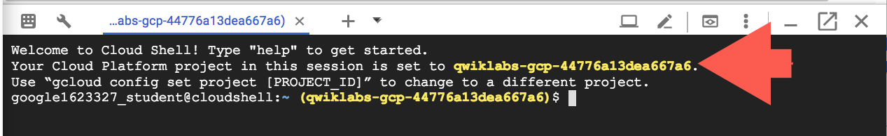

GCP Console의 오른쪽 상단 툴바에서 Cloud Shell 열기 버튼을 클릭합니다.

( 계속) Continue을 클릭하십시오.

Google Cloud Shell은 다양한 개발 도구가 탑재된 가상 머신으로, 5GB의 영구 홈 디렉토리를 제공하며 Google Cloud에서 실행됩니다. Google Cloud Shell을 사용하면 명령줄을 통해 GCP 리소스에 액세스할 수 있습니다.
GCP Console의 오른쪽 상단 툴바에서 Cloud Shell 열기 버튼을 클릭합니다.

( 계속) Continue을 클릭하십시오.
환경을 프로비저닝하고 연결하는 데 약간의 시간이 걸립니다. 연결되면 이미 인증되었으며 프로젝트는 PROJECT_ID 로 설정됩니다. 예를 들면 다음과 같습니다.

gcloud는 Google Cloud Platform의 명령줄 도구입니다. Cloud Shell에 사전 설치되어 있으며 탭 자동 완성을 지원합니다.
다음 명령어로 사용 중인 계정 이름 목록을 표시할 수 있습니다.
gcloud auth list
출력:
Credentialed accounts:
- <myaccount>@<mydomain>.com (active)
출력 예:
Credentialed accounts:
- google1623327_student@qwiklabs.net
다음 명령어로 프로젝트 ID 목록을 표시할 수 있습니다.
gcloud config list project
출력:
[core]
project = <project_ID>
출력 예:
[core]
project = qwiklabs-gcp-44776a13dea667a6